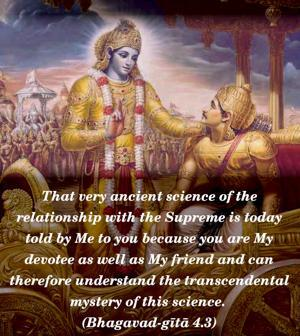
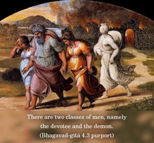
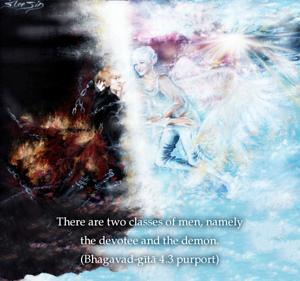
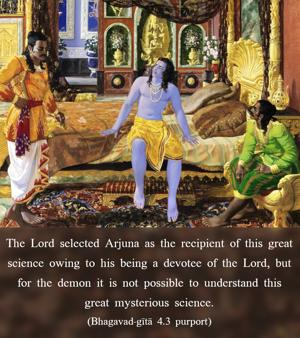

That very ancient science of the relationship with the Supreme is today told by Me to you because you are My devotee as well as My friend and can therefore understand the transcendental mystery of this science.




There are two classes of men, namely the devotee and the demon. The Lord selected Arjuna as the recipient of this great science owing to his being a devotee of the Lord, but for the demon it is not possible to understand this great mysterious science. There are a number of editions of this great book of knowledge. Some of them have commentaries by the devotees, and some of them have commentaries by the demons. Commentation by the devotees is real, whereas that of the demons is useless. Arjuna accepts Śrī Kṛṣṇa as the Supreme Personality of Godhead, and any commentary on the Gītā following in the footsteps of Arjuna is real devotional service to the cause of this great science. The demonic, however, do not accept Lord Kṛṣṇa as He is. Instead they concoct something about Kṛṣṇa and mislead general readers from the path of Kṛṣṇa’s instructions. Here is a warning about such misleading paths. One should try to follow the disciplic succession from Arjuna, and thus be benefited by this great science of Śrīmad Bhagavad-gītā.